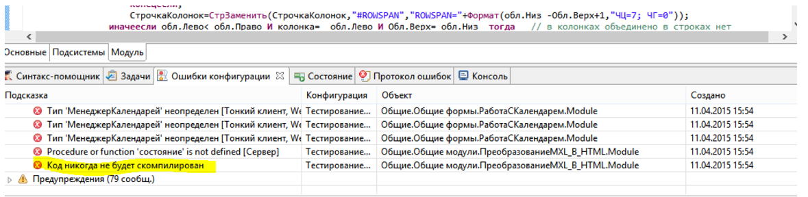

Как и выход мобильной платформы был для оооочень большого числа разработчиком открытием, так и я уверен, что и о новом конфигураторе - тоже мало кто слышал.
Поэтому давайте попробуем пробежаться по новому конфигуратору.
(Много больших картинок)
Добрый день.
Наконец, наступил тот момент, когда можно отказаться от конфигуратора 1С, от той родной среды, в которой вырос каждый программист 1С. Это, конечно, была шутка, но в каждой шутке…
А если честно, то именно таким будет разработка в среде 1С будущего.
10.04.2015 был знаменательный день, во всяком случае, для меня – 1С поделилась своими планами о принципах разработки в среде 1С. Итак – приветствуйте:
1C:Enterprise Development tools
1C:Enterprise Development tools – это среда для разработки конфигурации в IDE Eclipse.
В свою очередь Eclipse – это IDE, в которой можно разрабатывать на разных языках программирования, включая Android.
Если попытаться описать очень кратко и в двух словах, с упущением всех тех сложностей, нюансов и проблем, которые пришлось решить 1С, то 1С сделала свою подсветку синтаксиса в Notepad++.
Т.е. все знают, что в Notepad++, Sublime Text и других текстовых редакторах – можно настраивать свои синтаксисы подсветки и даже создавать свои плагины.
Вот если вкратце, то 1С создала ряд плагинов на Eclipse, которые позволяют разрабатывать решения под 1С. Что это значит? А значит, что большинство плагинов, которые уже существуют под Eclipse – будут доступны нам, это раз, а два – мы теперь можем писать свои плагины, которые позволят, например, делать рефакторинг кода, так, как этого хотим именно мы. Ну к примеру, все знают, что если вы попробуете выделить фрагмент кода 1С для выноса в отдельную функцию, то в случае, если в том коде есть команда Возврат, то рефакторинг не сработает, и мы, без участия 1С (ну или Снегопата и т.д.) – ничего с этим не могли поделать, а теперь – вполне можем.
Ну не чудесно ли это?
Но это еще не все плюшки, кроме этого – появилась поддержка MacOS.
Давайте посмотрим системные требования:
|
Операционная система |
Версия |
Архитектура процессора |
JRE |
Оконная система |
|
Windows |
7 |
x86 32-bit |
Oracle Java 7u9 |
Win32 |
|
x86 64-bit | ||||
|
Ubuntu Long Term Support |
12.04 |
x86 32-bit |
Oracle Java 6 Update 37 |
GTK |
|
x86 64-bit | ||||
|
Apple Mac OS X |
10.8 |
Universal 32-bit |
Oracle Java 7u9 |
Cocoa |
|
x86 64-bit |
Ну что ж, теперь не получится издеваться над 1Сниками, которые сидят под Макосью :). Ну ничего, мы найдем другой повод.
Давайте все-таки начнем, и посмотрим – что к чему.
Вначале – несколько нюансов:
Справка есть на ИТС (напоминаю про тест драйв на неделю).
Скачать можно отсюда:
https://users.v8.1c.ru/distribution/version_files?nick=DevelopmentTools10&ver=1.0.0.198
Для скачивания достаточно стандартного доступа на обновление платформы.
По этому адресу вас ждет тестовая платформа 8.3.6.1945, я думаю не надо объяснять, что ее надо скачать и установить, иначе не будет доступен некий функционал. И как видите – тут нет 1С под Макось (вот и повод появился:) ), скорее всего, это значит что не будет доступен режим отладки, но я не уверен, так как у меня нет Макоси.
Далее, внизу находятся файлы уже с самими утилитами для разработки, качайте нужную вам версию.
После того как вы это сделаете – разархивируйте папку и запустите файл dt.exe – все должно быть отлично (но, если ничего не помогает его запустить, тогда можно запустить файл eclipsec, но будет урезана часть функционала). После этого – откроется конфигуратор, простите - Eclipse.
Теперь давайте разберемся по порядку:
Я выделил цветами интересные для нас области.
Красная область (слева вверху) – это древо конфигураций, и это значит, что вы можете добавлять сколько угодно конфигураций и работать с ними одновременно.
Зеленная область – область процедур, о ней мы поговорим отдельно, ибо она очень таки удобная.
Синяя область (Справа вверху) – это просто свойство объектов.
А вот фиолетовая область – это очень интересная область, но о ней тоже позже.
Оранжевая область – это все ваши текущие базы, которые подключены у вас через стартер 1С, по сути идет чтения файла с прописанными базами. НО! Это не конфигурации, вы из этих баз должны вытянуть конфигурации самостоятельно. Если разрешение экрана высокое, то эта вкладка будет развернута в центре внизу.
Добавить конфигурации можно по разному, можно загрузить из файла, можно из файлов, можно из git, а да, чуть не забыл – тут добавили git :). Но о нем позже.
Давайте вытянем какую то конфигурацию из базы данных.
Нажимаем правой кнопкой на базе:
И жмем импорт конфигурации. Кстати, дамп – это выгрузка в dt, да-да, оказывается, выгрузка в dt, это не бэкап базы, не резервная копия (о чем не устанно говорит 1С и не только), а это именно дамп, тут 1С однозначно расставили точки над i.
Выбираем параметры, что уже реально удобно :)
И после нажатия Готово (делать это можно и при пользователях в базе):
Вот так выглядит древо конфигураций. Увы, доступны далеко не все объекты, но ничего страшного, у меня сложилось впечатление, что изначально будут разрабатывать в этой среде именно мобильные решения :) Все на это указывает.
Теперь предлагаю открыть любую форму:
Обратите внимание – разницы особой нету, кроме нижних панелей, теперь давайте переберемся в модуль:
Слева внизу – отображаются все функции, сгруппированные по областям, теперь, сразу подсвечивается функция в которой вы находитесь, экспортные функции подсвечиваются зеленым:
Синтаксис помощник теперь подсказывает вам постоянно все функции, на которые вы тыкаете:
Просмотр всех ошибок конфигуратора – тоже радует, особенно своим вердиктом в самом конце:

Вот так выглядит конструктор запроса:
А вот так выглядит отладка:
Итоги:
Все вышло намного круче, чем я ожидал. Очень непривычно видеть 1С в таком ракурсе.
К сожалению – на текущий момент не доступны очень многие объекты и возможности, однако, с другой стороны – это дает время привыкнуть. И что-то мне подсказывает, что 1С первым делом сделает отладку мобильных решений в этой среде, таким образов заставив людей сюда пересесть через «не хочу», так как те ограничения, которые сейчас есть – очень сильно напоминают ограничения в мобильной платформе. Но, будем ждать.
На этом все. Чуть позже – будет инфа о работе с гитом, но это если не лень будет описывать.